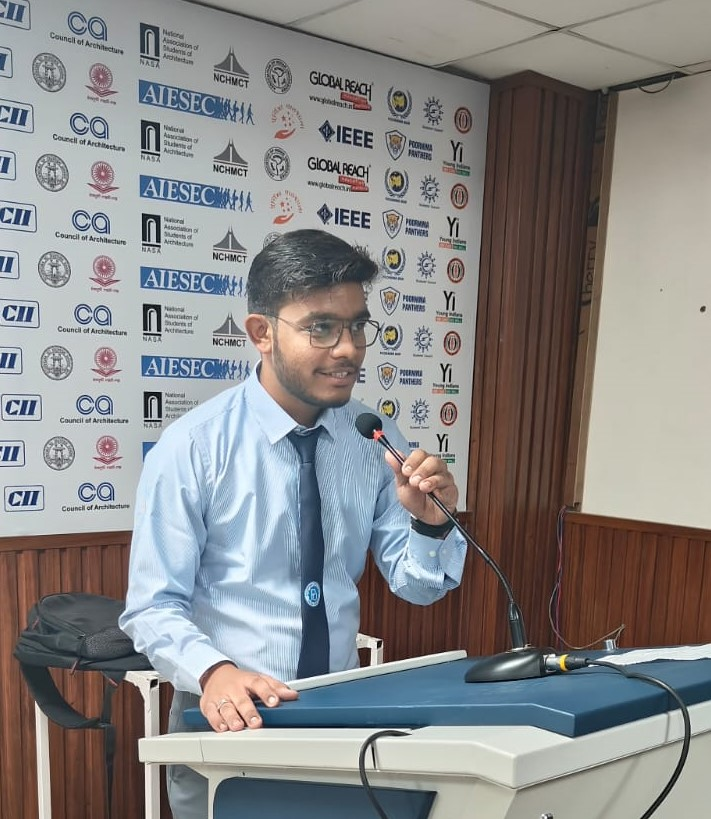

Shreyansh Jain

Summary
I am a passionate B.Tech CSE student eager to learn and explore the ever-evolving field of technology. I am also interested in emerging technologies such as artificial intelligence, machine learning. I am seeking opportunities to collaborate with other developers and learn from experienced professionals. My goal is to make meaningful contributions to the tech industry while constantly expanding my skill set.
Education
-
Class 12 (HSC) with Physics,Chemistry,Maths
Government Senior Secondary Maharawal School,Dungarpur,Rajasthan(India)
07/2022 - 04/2023
- B.Tech(computer science and engineering)
Poornima University,Jaipur,Rajasthan(India)
08/2023 - Present
Work Experience
- Campus Ambassador [The Return Journey]
11/2023-Present
The Return Journey is a travel platform that provides personalized and seamless travel experiences. Our platform empowers travelers to curate their own travel experience without hassle and makes sure each journey is tailored to their individual travel personality and preferences. We connect travelers directly with local service providers to ensure an authentic and cost-effective experience. Join us on your next journey and make it extraordinary.
- Vice Captain of Drone / Udaan Club [Poornima university]
08/2023-Present
As Vice Captain of UDAAN Drone Club at Poornima University, I thrive in the dynamic intersection of leadership and technical innovation. I play a pivotal role in shaping the club's direction, supporting our passionate members, and driving impactful projects forward.
Skills
- Teamwork
- Python
- time Management
- adaptable
Certificates
- Python By Guvi Geek ,IITM